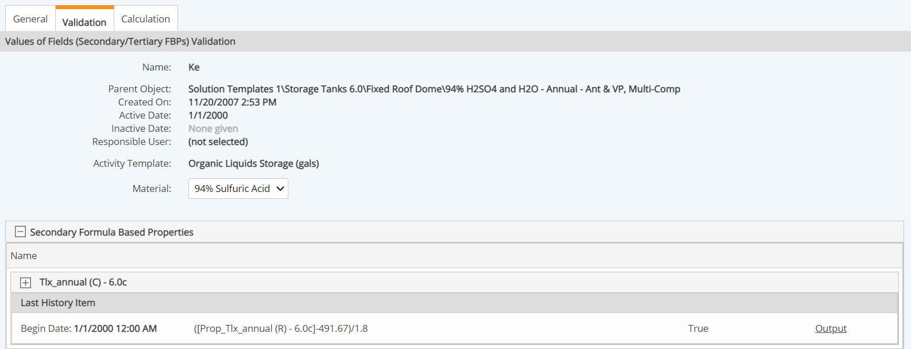
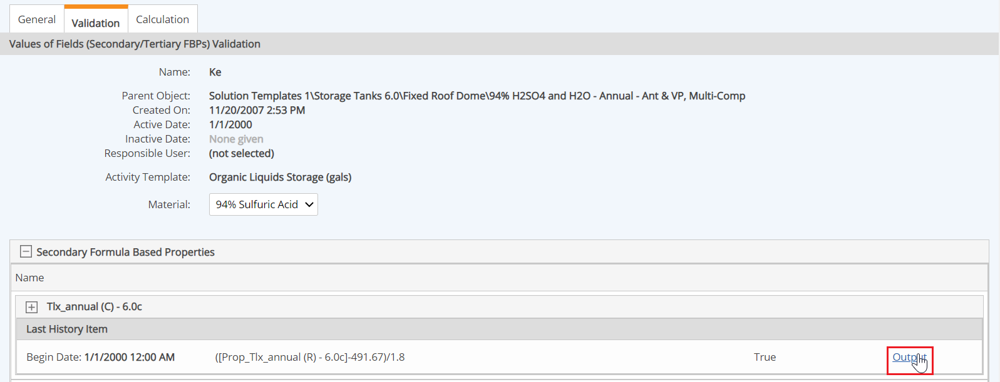
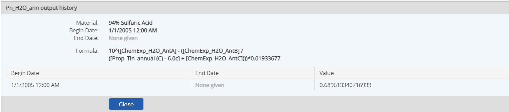

Material Formula Based Secondary Properties (Secondary FBPs) are calculated properties of materials that are dependent upon where the material is used. The calculation may be dependent on such factors as annual temperature data for the location, or equipment specifications that are stored on a calculation template associated with the POI that represents the equipment.
The formula may use:
The formula for the property is the same for all materials to which it is applied, although the value may depend on variables that cannot be known until it is associated with a Material Activity calculation.
The formula is validated and calculated when a Material Activity Calculated Requirement that uses the material is created.
To check the validation of the property:
If more than one material is associated with the MAC, select the material you want to validate.
The Secondary and Tertiary Formula Based Properties are shown. The Valid column shows TRUE if all factors necessary for its calculation are found and the calculation can be performed. If the validation is FALSE, missing factors are shown in red.

The calculation must be valid for at least one associated material if if the property is required in the MAC calculation.
To view the calculated value of a Secondary FBP for a Material Activity calculation:
In the Secondary Formula Based Properties section click Output for the property.

The calculated output value is displayed. If there is more than one value history, each historical value will be shown.
